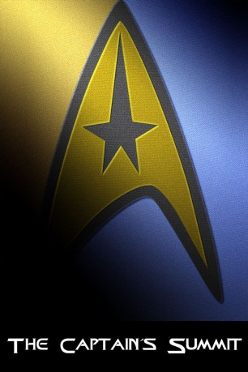

#419 Star Trek - Bonus - The Captain's Summit
 
 IMDB-Wertung: 8.0 / 10
IMDB-Wertung: 8.0 / 10  Metascore: 0
Metascore: 0 
In dieser einzigartigen Dokumentation treffen sich vier Schauspieler (William Shatner, Patrick Stewart, Leonard Nimoy, Jonathan Frakes), die an einem Punkt ihrer Karriere die Rolle des Captains in Star Trek gespielt haben, zu einer einzigartigen Gesprächsrunde. Whoopi Goldberg, berühmt aus Star Trek: The Next Generation moderiert die Runde.
Jahr: 2009
Dauer: 71 Minuten
FSK:
Land: USA Studio: Paramount Home EntertainmentTonspuren:
Untertitel: Deutsch, Englisch,
Auflösung: 1080p (1920x1080) Größe: 6860 MB
Genre: Dokumentation
Regisseur: Tim King
Drehbuch:
Soundtrack:
Darsteller:
Datei: X:\7+mehr(A-Z)\Star Trek\Star Trek - Bonus - The Captain's Summit (2009, FSK, 1920x1080).mkv seit 21.02.2015
Festplatte: HD Collection-7+mehr(A-Z)+Person
 Es gibt insgesamt 19 Filme in der Gruppe '7+mehr(A-Z)\Star Trek'
Es gibt insgesamt 19 Filme in der Gruppe '7+mehr(A-Z)\Star Trek'